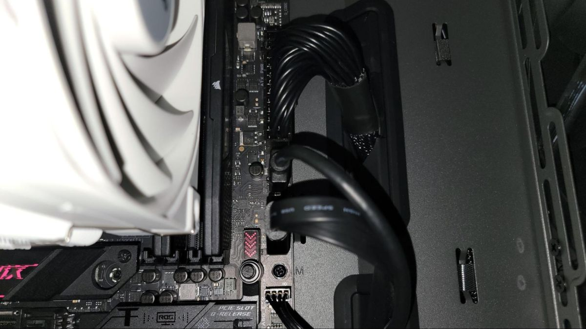
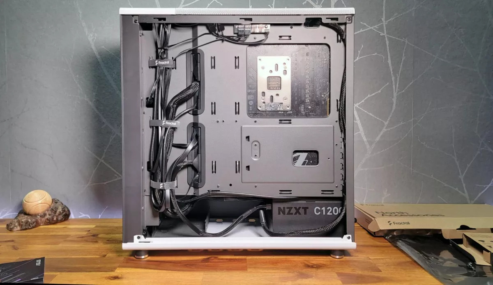
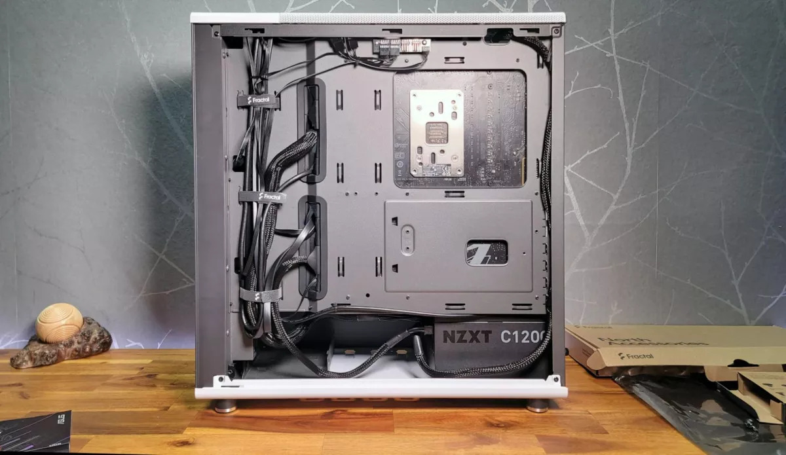
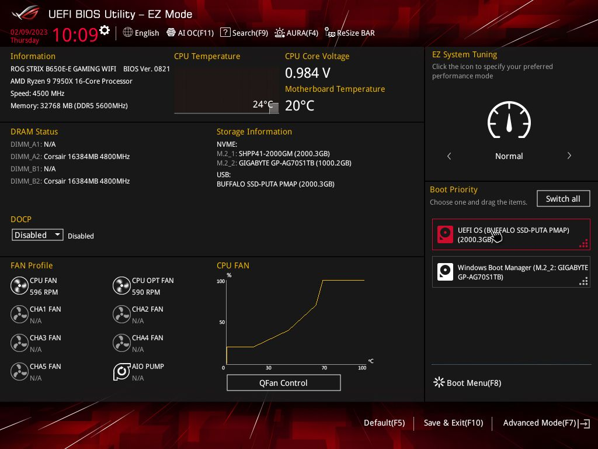
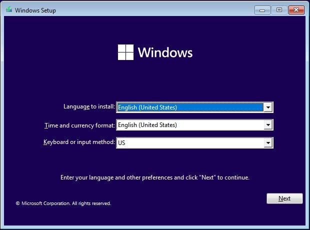

Building a Computer - Part Three
Last Steps
Welcome to the final part! In the previous parts, I talked about the parts you need to build a computer and how to install them. But I left out a few crucial steps: plugging them in and turning the computer on. Let's dive in!
Cables
Let's talk cables. There are a lot of cables in a computer. There are cables for the power supply, cables for the motherboard, cables for the graphics card, and so on. It can be a bit overwhelming. But don't worry, it's not that bad.
It's best to take care of the motherboard cables first. Be sure to have the manual nearby, as it will tell you which cables go where. The manual will also tell you which cables are optional and which are required. All motherboards require a power source; this is provided by the 24-pin power cable. Plug it in and make sure it's secure. The next work to do is the CPU fan cables. Your CPU cooler will have its own dedicated power source, which maps to a motherboard connector typically labeled as "CPU Fan" near the socket.

There's a set of important cables called the front panel connectors located at the bottom of the motherboard. These cables are responsible for connecting the I/O ports and case buttons to the motherboard. For example, the power button, motherboard lights, reset button, audio jacks, and USB ports are all front panel connectors. Each connector should be labeled, but refer to the manual. The power connector is a pair of probes, positive and negative. The reset button is a single probe. The audio jack is usually a pair of probes, but depends on the type of port. The minor ports for motherboard lighting and speakers, hard drive activity, etc. are also single probes.

The USB ports are a bit more complex. Across the motherboard are a number of USB headers, which depend on the USB version. The older USB 2.0 uses a 9-pin connector in a 5x2 arrangement. The newer USB 3.0 ports are larger, using a whopping 19-pin connector in a 10x2 arrangement. Plug in any USB ports you have to the nearest USB header. This is what makes USB ports on the front of the case possible!
The GPU cable is pretty simple, however. The GPU will have PCIe (x2) power connectors that you can plug in.
Last up are the case fans and optional lighting. Any remaining case fans you have should be plugged into the nearest fan headers. Similarly, if you have additional lighting, you can plug them in to the nearest (a)RGB headers according to the manual.
Cable Management
Cable management is the process of organizing and hiding cables. It's not a requirement, but it does make your computer look nicer. It's also a good way to prevent cables from getting in the way of airflow or building up dust. The case has a number of holes and slots for cables. Try to route cables through these as much as possible. If you have a lot of cables that follow similar routes, use cable ties or sleeves to keep them tied together.
The cables should be plugged in to their components, but are not yet connected to the actual power supply. Modular power supplies are built with PC building in mind; each slot corresponds to a specific cable based on the number of pins, so you can't make a mistake here. Take your managed/organized cables and plug them in.
 

Turning the Computer On
At this point, everything should be ready. Get a monitor and keyboard, plug your PC into an outlet, and turn it on! When a computer boots up, it first does a power-on self-test (POST). This is a series of tests that check the hardware to make sure it's working properly. If the POST fails, the computer will not boot. If the POST passes, the computer will boot into the BIOS/UEFI, which is the computer's firmware controller.
It's time to install an operating system, such as Windows 11. Either buy a Windows 11 USB drive or manually configure a bootable USB drive using the Windows Media Creation Tool. With the PC off, plug the USB drive into the computer. The BIOS will automatically detect the USB and boot from it. From there, just follow the steps and you'll be up and running!
Conclusion
Congratulations! You've built a computer! You've learned about the parts you need, how to install them, and how to set up your PC for success. You're now ready to start using your computer. I hope you enjoyed this tutorial.
Back to Part 2.